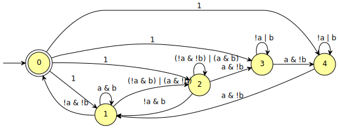

genaut
This tool outputs ω-automata generated from scalable patterns.
These patterns are usually taken from the literature (see the
genaut(1) man page for references).
--ks-nca=RANGE A co-Büchi automaton with 2N+1 states for which
any equivalent deterministic co-Büchi automaton
has at least 2^N/(2N+1) states.
--l-dsa=RANGE A deterministic Streett automaton with 4N states
with no equivalent deterministic Rabin automaton
of less than N! states.
--l-nba=RANGE A Büchi automaton with 3N+1 states whose
complementary Streett automaton needs at least N!
states.
By default, the output format is HOA, but this can be controlled using the common output options for automata.
For instance:
genaut --ks-nca=2 --dot

The patterns can be specified using a range of the form N (a single
value), N..M (all values between N and M included), or ..M (all
values between 1 and M included).
genaut --ks-nca=..5 --stats='%F=%L has %s states'
ks-nca=1 has 3 states ks-nca=2 has 5 states ks-nca=3 has 7 states ks-nca=4 has 9 states ks-nca=5 has 11 states